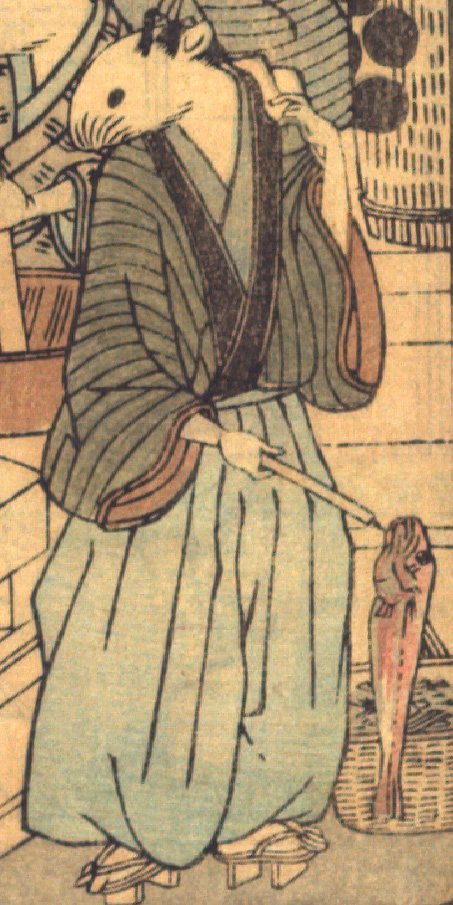

男の鼠。髪を結い、墨色の着物と水色の袴を身につけ、下駄を履いている。土間に立ち、先に金具が付いた棒を右手にもっており、その金具に赤い魚がひっかかっている。左肩に白い布をひっかけている。手足は人間のものである。
著作者：David Thompson／出典：親書誌：U426_nichibunken_0112：Nedzumi no Yome-Iri／日付：2006／資源識別子：U426_nichibunken_0112_0007_0003
Copyright (c)2010- International Research Center for Japanese Studies, Kyoto, Japan. All rights reserved.